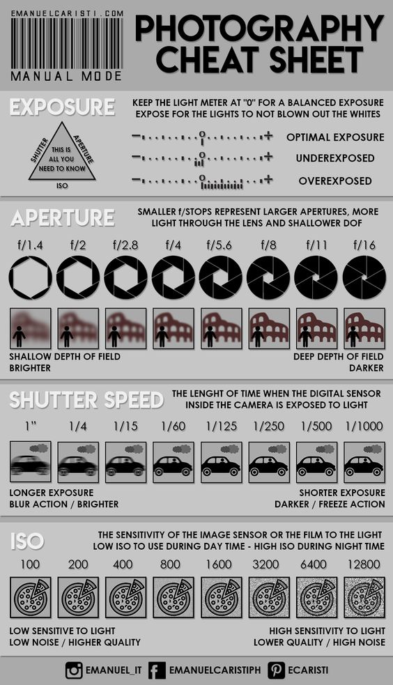
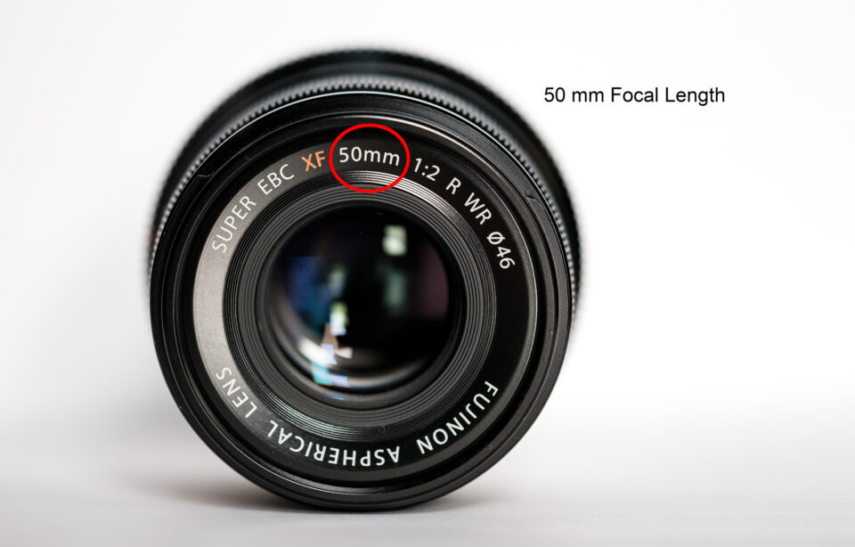
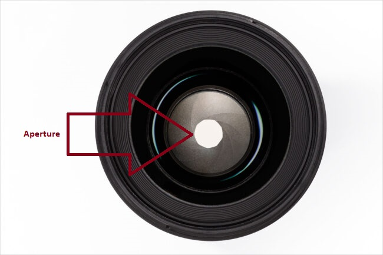
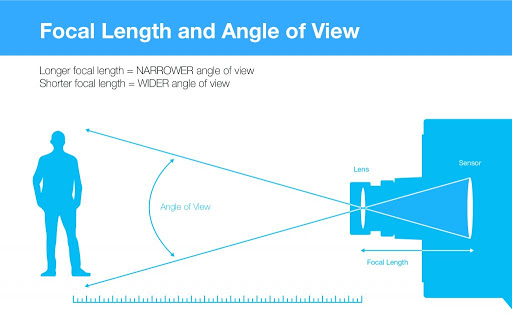

| lifehack.com | The Ultimate Photography Cheat Sheet  |
| photographylife.com | Focul length (e.g. 50 mm)  |
| youtube.com | Distance between the lens and the image sensor   |
| photographylife.com | Aperture is like the pupil, which can open and close to change the light that passes through |
| techradar.com | Canon DSLR tips and tricks |
| youtube.com | Quick canon 600d tutorial |
| davemorrowphotography.com | Shutter Speed Guide
|